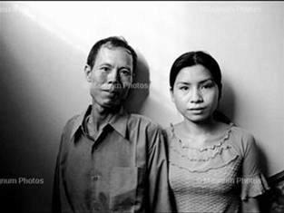

Tiền Phong - Thật may, ông chủ tốt bụng, sạch sẽ và dễ tính, chỗ ở yên ổn, lương cao, tôi dự định sẽ ở đây lâu dài. Tôi không còn biết lâu dài là bao lâu, tôi chỉ biết tôi muốn như thế này mãi mãi. Một ngày, Trương Văn Huy ngỏ lời muốn tôi làm tình nhân của anh ta.
Ông chủ mới hơn tôi một giáp, cũng mới chỉ ba lăm ba sáu tuổi. Cửa hàng của ông nằm ở góc phố, gần chợ đêm, tầng một vừa bán trầu cau thuốc lá vừa đặt mấy chiếc máy đồ chơi gắp thú nhồi bông, nhạc réo binh boong suốt ngày đêm.
Ông chủ mới to béo bệ vệ, họ Trương, tên là Văn Huy. Ông đã li dị vợ từ lâu, hiện ở một mình trong cửa hàng. Tầng hai là phòng ngủ đặt một chiếc tivi lớn. Tầng ba chất đủ thứ linh tinh vụn vặt, hàng hóa, đồ cũ. Cửa sổ ngách trông sang khu chợ đêm mỗi tối người đi chơi đông kín, sau này khung cửa là người bạn thân thiết nhất của tôi những lúc cô đơn.
Công việc bán trầu cau khá đơn giản, quả cau nhỏ như nụ hoa hồng, được gọt sơ rồi bao quanh bằng lá trầu xanh. Trầu cau được gói vào túi ni lông nhỏ có khóa kéo miệng, đặt gọn trong một chiếc cốc uống nước bằng giấy bé xíu. Người ăn trầu sẽ nhổ nước miếng vào chiếc cốc giấy, vừa tiện vừa vệ sinh. Chiếc cốc giấy vừa vặn với khung đặt cốc nước trên đầu xe ô tô.
Việc của tôi chỉ là ngồi trông quầy, bán hàng xong, tôi đi chợ nấu cơm cho cả hai, nhưng thường thì chúng tôi đều ăn cơm ngoài hàng. Tôi gọi cơm hộp về ăn, vừa ăn vừa trông hàng.
Ngồi làm xong hàng, không có việc gì, tôi săm soi đôi bàn tay. Đôi bàn tay tôi đã có màu hồng hào như đôi má tôi, sau bao nhiêu sóng gió hãi hùng. Tôi xinh đẹp dần lên, tôi dành thời gian rảnh để sơn những chiếc móng tay tôi theo màu tôi yêu.
Chợ đêm bán rất nhiều móng tay giả, những mẫu móng kiều diễm. Tôi phát hiện ra tôi làm móng rất khéo, những chiếc móng tay đẹp nổi bật làm tôi tự tin và tự hào về chính bản thân mình.
Có ai nói, móng tay là thứ cá nhân nhất trong những thứ cá nhân. Ai săm soi móng tay là kẻ đang trong tâm trạng ích kỷ nhất. Có sao, cuộc sống bây giờ tôi chỉ còn sống vì tôi.

Hình ảnh minh họa trong bộ ảnh của nhiếp ảnh gia Trương Càn Kỳ (Đài Loan)
Hôm đó là ngày cuối năm, lại là một cuối năm, tôi luôn ngơ ngẩn nghĩ tới quê nhà, những buổi chiều cuối năm ở Sài Gòn, hoa mai rực lên trên dọc đường Lê Lợi, tôi thích đi qua Lê Lợi, qua công trường Mê Linh, bến Bạch Đằng, sang quận Tư, vòng về quận Một.
Tôi thích đi chợ Tết cùng mẹ tôi, mua rượu cho ba tôi, mua nhang thắp lên bàn thờ cho anh trai tôi. Anh trai tôi đã chết trong một tai nạn thảm khốc ngày tôi còn nhỏ, ký ức về anh chỉ là một ông anh áo trắng mãi mãi ở tuổi quàng khăn đỏ, nhưng mỗi lần nhớ về anh, tôi lại luôn thấy tôi nhỏ dại, ngồi sau chiếc xe đạp cũ anh chở tôi đến trường, vượt qua ngã tư còi xe máy ồn ào.
"Trương nhào tới giật lấy lọ hoa, đập vào tường vỡ tan, tát tôi ngã sấp xuống giường. Tôi cuống cuồng chồm dậy chạy xuống nhà kêu cứu."
Hình ảnh cuối cùng là một hôm, chiếc xe đạp của hai anh em nát bét ở ngã tư. Ba tôi mang những mảnh xe nát vụn về, vừa đi vừa khóc ngất. Năm ấy nhà tôi không có Tết.
Nên vì sao tôi thèm có anh trai. Cảm giác ban đầu của tôi về Trương Văn Huy gần như thế, có vẻ như Trương giống một người anh, chứ không phải chủ nhà, không phải ông chủ của tôi, cũng không phải là người bạn.
Vì thế, khi Trương đề nghị tôi làm bạn gái, tôi hơi đắn đo. Tôi hỏi, vợ con anh đâu?
Trương chỉ sang quán bán nước giải khát đối diện bên kia đường. Tôi giật mình trợn tròn mắt hỏi, trời ơi có thật không?
Trương nói, chia tay rồi là hết. Vợ cũ của tôi và đứa con tôi mở quán nước bên kia đường, tôi ở bên này bán trầu cau, chẳng ai chiếm khách hàng của ai, cũng không liên quan gì tới nhau nữa, việc ai nấy làm.
Tôi nói, sao tôi không hề nhận ra. Nhưng liệu họ có đánh ghen không?
Anh ta nói, nếu có, thì họ đã gây sự ngay từ khi cô mới tới đây. Vậy mà suốt hai tháng qua, cô thấy chưa, với họ, tôi và ngôi nhà này như thể không còn tồn tại. Vậy cô còn lo sợ gì? Hay cô sợ rằng tôi không nghiêm túc?
Tôi nói, nhưng khi đề nghị tôi làm người yêu của anh, anh lại nói nghiêm túc quá, làm cho tôi nghi ngờ đây không phải là thật.
Trương Văn Huy mỉm cười, nói, tôi thích cô từ lâu.
Từ cảm giác người anh sang cảm giác người tình cũng không xa lắm. Tôi thích Văn Huy vì anh sạch sẽ, sòng phẳng rõ ràng và không ki bo, không khó tính, không xét nét cũng không can thiệp quá nhiều vào đời tôi.
Có lần tôi kể với Văn Huy về chồng tôi, về chuyện tôi đã từng bị cưỡng bức. Nhưng tôi không kể về Nhan, về Dương Lý Huy, hình như những gì êm ái nó nằm co trong góc tim tôi, tôi muốn giữ riêng cho mình.
Văn Huy không bình phẩm gì về quá khứ của tôi. Chắc anh cũng có những quá khứ cần người khác tha thứ.
Chúng tôi chắc vừa có duyên vừa có nợ, như cau với trầu, dù muốn dù không cũng sẽ đi cùng nhau, bị số phận đặt cạnh nhau trên đường đời.
Cho đến lần đầu tiên Trương Văn Huy tát tôi, anh đấm đạp lên người tôi, chém nát đồ đạc của tôi. Khi đó tôi mới tỉnh giấc mộng.
Có lẽ đúng như Thán nói ngày xưa, đường phu thê của tôi có nghiệp căn quá nặng, cho nên người đàn ông nào tới với tôi cũng sẽ mang tai họa tới?
Trương Văn Huy yêu tôi, hoặc anh nghĩ rằng yêu tức là sở hữu. Tôi đã sở hữu về anh, tức là anh không cần trả lương cho tôi nữa, nhưng lại mặc nhiên đòi tôi chăm sóc. Tôi bỗng nhiên trở thành một bà nội trợ, Ô sin không lương, phải bỏ tiền ra đi chợ, cằn nhằn lúc anh say, phục vụ đám đàn em của anh mỗi khi chúng tới nhà ăn uống, và mở cửa chờ chồng mỗi khi anh đi tới khuya không về.
Nhà cạnh chợ đêm, nên đông đúc tới khuya. Nhiều khi tôi đóng cửa tiệm sớm, đứng trên cửa ngách trông xuống chợ đêm huyên náo. Cách một lớp cửa kính, thế giới càng có vẻ xa cách tôi. Tôi đứng ngó xuống đường, chờ chiếc xe máy tay ga cũ kỹ vè vè qua đường tạt vào đỗ trước cửa. Anh thường về từ phía trung tâm thành phố.
Một đêm, khi tôi xuống, anh đã chui ngay vào buồng tắm, quần áo vứt ở cửa dính máu, tôi hoảng hốt đập cửa buồng tắm gọi anh.
Hóa ra đó là máu của người khác. Anh không nói của ai, nhưng anh bảo, anh đi đòi nợ thuê, hôm nay chủ nợ rắn mặt quá.
Trời ơi, tiền của anh đưa tôi thì ra đều là những đồng tiền bạo lực, nợ nần, đen tối nặng nề.
Tôi lên gác, lôi những chi phiếu và thẻ ngân hàng, các sổ tài khoản xuống, vứt ở sa lông tầng hai. Tôi nói, anh Trương, em không thể giữ tiền cho anh được nữa.
Tôi thu dọn quần áo ra đi. Trương Văn Huy bắt kịp tôi ở đầu cầu thang, anh ta lẳng va li quần áo của tôi xuống chân cầu thang, túm tóc tôi đánh túi bụi. Tôi kêu thét lên, vừa chống đỡ vừa né, chạy vào phòng ngủ. Tôi vớ lấy chiếc lọ hoa sứ cao cổ ở góc phòng để tự vệ.
Trương nhào tới giật lấy lọ hoa, đập vào tường vỡ tan, tát tôi ngã sấp xuống giường. Tôi cuống cuồng chồm dậy chạy xuống nhà kêu cứu.
Ở bậc thang cuối cùng, Trương bắt được tôi, xô tôi ngã vào chiếc tủ kính đựng trầu cau. Tất cả hàng hóa đổ xuống, trầu cau lăn lóc, những hộp thuốc lá dở vung vãi, tôi ôm mặt ngất đi giữa đám lá trầu không và cau non giập nát.
Tôi tỉnh dậy khi Trương kéo tóc tôi lôi vào buồng tắm, đổ một chậu nước lên mặt. Quần áo tôi rách bươm, áo rách toạc từ lưng xuống tận nửa người, mặt mũi húp híp. Tôi khóc và nói, em xin anh, anh để cho em đi.
Đôi mắt Văn Huy vằn lên, anh nói, anh không để em đi đâu hết, em muốn đi thì em sẽ chết luôn ở đây!
Huy ra xe, mở cốp xe lôi con dao dài, con dao vẫn còn dính máu. Chắc chắn đây là máu của người đã dính lên áo quần anh ta lúc nãy. Trời ơi, sao tôi lại kết thúc cuộc đời ở đây trong tay một kẻ điên loạn như thế này?
Tôi khóc òa lên đau đớn:
- Hôm nay anh muốn giết thêm một người nữa hay sao?
- Ngọc, em mà đi thì anh cũng chết luôn ở đây. Chẳng thà anh giết em trước!
Nói đoạn, Huy xông ra băm chặt nát bét va li quần áo của tôi. Rồi quay lại nhìn tôi, lăm lăm con dao trong tay, hỏi:
- Em thật sự không còn yêu anh nữa chứ gì?
Tôi làm sao có thể nói không với con dao, tôi khóc ngất, quỳ xuống lạy Huy.
- Hãy để cho em sống, em còn phải nuôi con trai em, nó còn nhỏ quá!
- Nó không phải con tôi!
- Thế thì hãy để cho em mặc áo vào, em không thể chết mà cởi trần!
Tôi lết đến chỗ va li đồ đạc của tôi, lần trong đống rách nát ra một mảnh vải còn tương đối lành, tôi vừa mặc vừa khóc. Con ơi, mẹ đã đặt tên con là Bình Minh, để con không vương vấn gì với đời mẹ. Chao ôi, con có biết mẹ đau đớn không vì mẹ sẽ không được nhìn thấy con lớn, sẽ không được ở bên con nữa.
Tôi không thiết kêu than nữa, tôi gục xuống chân anh, nhắm nghiền mắt lại khi anh vung dao lên.
Máu văng đầy mặt tôi.
Tôi quay xe về nhà, thương con quặn thắt. Cuộc sống yên bình là do mình chọn. Thế thì tại sao tôi lại cứ đi về phía sóng gió.